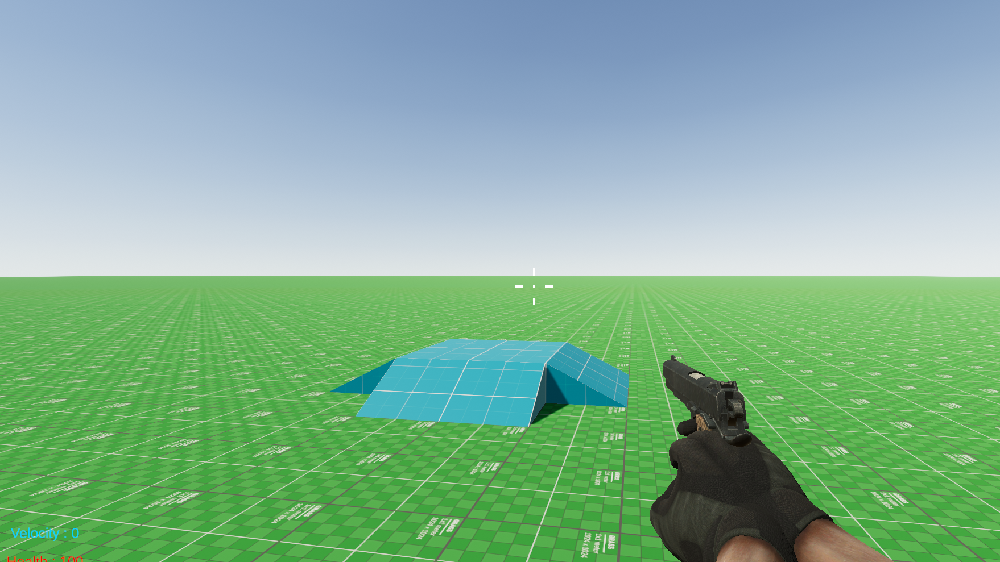

1 - One last look
2023-10-17
The last updates the game received before I rebuild the game.
Bugs
Multiples bugs were fixed such as : no sound when shooting in third person mode, and some inverse kinematic glitches.
Weapons
If you followed my old devlog, you know there is already recoil, but I made it better now.
Multiplayer
Very big thing was added, now guns are (almost) fully implemented in multiplayer mode.
Ammo
I added a modular ammo system with 4 basic ammo types such as small, medium, large, shutgun. Addionally, you can make your own type of ammo for any specific use (a grenade or... fish?). They are also synced with the server. Some basic 3d model for them were added.
Map
grass...? Also I added a cool mansion map, perfect for murder gamemode.

Optimization
A console command was added in order to enable this panel which shows all cpu/graphical/memory related information.